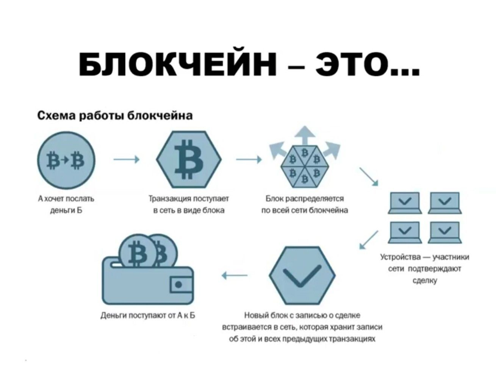

Блокчейн в финансах
Блокчейн в финансахБлокчейн оказывает значительное влияние на финансовую отрасль, предоставляя новые возможности для транзакций и управления активами. Технология блокчейн способствует снижению затрат, ускорению расчетов и повышению прозрачности в финансовых операциях. Применение блокчейна для трансграничных платежейОдна из главных областей применения блокчейна — это трансграничные платежи. Использование блокчейн-технологий позволяет снизить зависимость от посредников и повысить скорость проведения транзакций между странами, что особенно важно для международной торговли и мигрантов, отправляющих деньги на родину. Уменьшение комиссий и ускорение транзакцийБлагодаря децентрализации и исключению посредников, блокчейн может существенно уменьшить комиссии за переводы. В отличие от традиционных финансовых систем, которые могут обрабатывать транзакции в течение нескольких дней, блокчейн позволяет проводить платежи практически мгновенно. Децентрализованные финансы (DeFi)DeFi, или децентрализованные финансы, представляют собой набор финансовых услуг, построенных на блокчейне, таких как кредитование, заимствование и торговля активами без участия традиционных банков. Эти платформы работают на смарт-контрактах, что позволяет пользователям взаимодействовать напрямую без посредников. Примеры использования: Solana, EthereumПлатформы, такие как Solana и Ethereum, активно используются в финансовом секторе для создания децентрализованных приложений. Solana известна своей высокой скоростью транзакций и низкими комиссиями, что делает её привлекательной для DeFi-проектов. Ethereum, в свою очередь, предоставляет широкие возможности для разработки смарт-контрактов и является основой для многих DeFi-приложений. Проблемы и перспективы интеграции блокчейна в финансыНесмотря на значительные преимущества блокчейна, его интеграция в традиционную финансовую систему сталкивается с определёнными проблемами. Важнейшие из них — это регулирование, масштабируемость и принятие технологии на глобальном уровне. Однако перспективы блокчейна в финансах выглядят многообещающими, так как технология продолжает развиваться и находить новые применения. |
 |